In short
- Open the form link. Check the date, the lorry and your name.
- At every shop: get the signature and stamp, then take a photo of each invoice (1 invoice = 1 photo).
- Fill in pallets if any, then tap Save.
- Wait until the shop shows Delivered.
- Cannot deliver? Tap Problem.
1Open the form
Open the link of your branch:
Open the Mentakab formclfproject01.github.io/clf-transport-forms/CLF_POD_Form.html Open the Kuantan formclfproject01.github.io/clf-transport-forms/CLF_POD_Form.html?branch=KTNThe Kuantan link ends with ?branch=KTN. Save your link (bookmark) so it is easy to open every day.
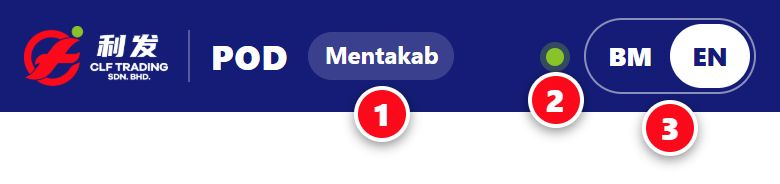
- Branch name. It must be your branch. If it shows another branch, you opened the wrong link.
- Green dot = internet is on. Grey dot = no internet, or the list on screen is the old copy kept on the phone (see part 4).
- BM EN to change the language. The phone remembers your choice.
2Lorry, driver and date
The Trip details box is at the very top. The first time, it is open and empty.
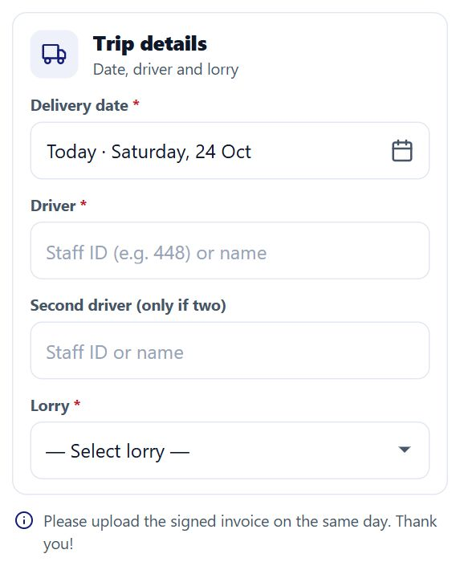
- Lorry: choose your lorry number first. Today's shop list appears below. The Driver box says Finding the driver… for a moment.
- Driver: the name may fill in by itself: the driver the office set for that lorry, or the name the phone remembers. Check it is right. If it is empty or wrong, type your staff ID (for example
901) or your name, then tap your name in the list. - 2nd driver (if any): fill in only when two people are on the lorry. If you are alone, leave it empty. Never choose the same name twice.
- Delivery date: already filled in with today's date (it says Today). Usually you do not change it. A future date cannot be chosen.
Changed the lorry? Check the name again. Every time the lorry is changed, the driver boxes are emptied and the name is looked up again for the new lorry. Make sure the name that appears is yours.
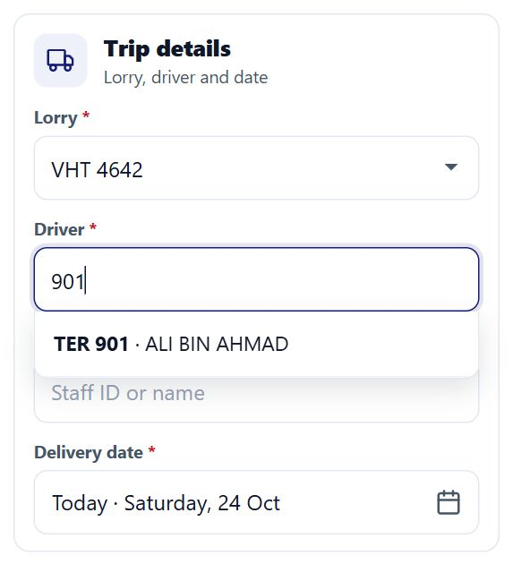
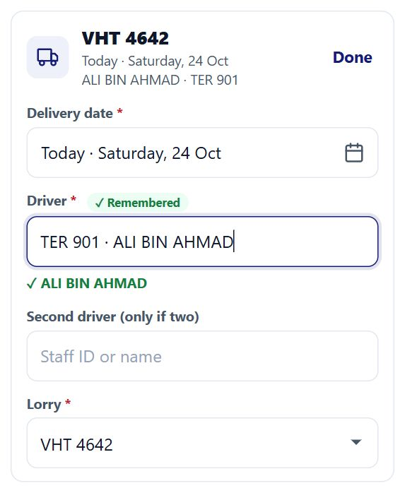
The phone remembers your name and lorry. Tomorrow, everything is already filled in. Just check it, then go to the list.
The box folds into 3 lines
When the date, lorry and name are complete, the box folds into 3 lines: lorry, date, name. Tap Change to open it again. Tap Done to fold it again. Nothing is deleted.
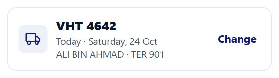
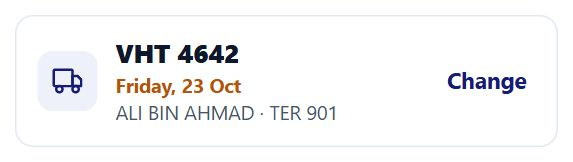
Forgot to choose your name?
The form will not save without a driver name (the delivery would count for nobody). When you tap Save, the box opens by itself at the Driver field, with the red text Please select your name. Choose your name, then tap Save again. Your photos are not lost.
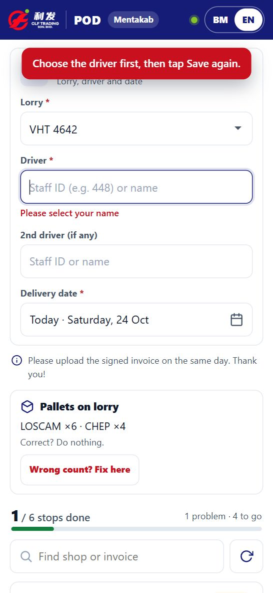
3Pallets on lorry
The Pallets on lorry box shows the pallets the store loaded on your lorry.
- Count correct: do nothing.
- Count wrong: tap Wrong count? Fix here, change the numbers to what you really received, then tap Send the count you received.
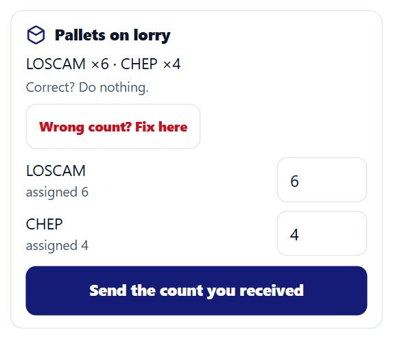
4Delivery list
After you choose the lorry, today's shop list appears. The list comes from the office.
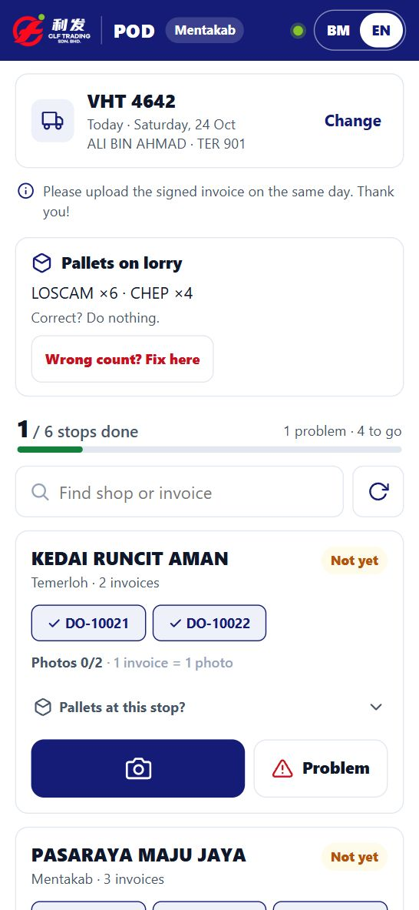
- 1 / 6 stops done: how many shops are finished. On the right: how many shops have a problem and how many are still to go.
- Find shop or invoice: type a shop name, an area or an invoice number.
- ↻ (Refresh list): get the newest list from the office. The list also refreshes by itself every time you come back to the form.
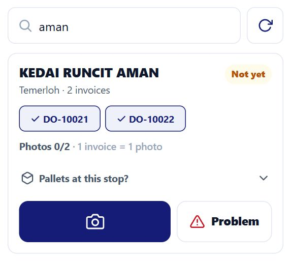
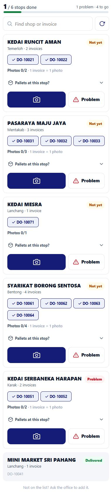
Order: shops still to do at the top, shops with a problem next, delivered shops (grey) at the very bottom. The label of each shop:
- Not yet = not finished
- Delivered = finished
- Problem or the reason, for example Shop closed = could not deliver
Offline copy
No internet? The form shows the list kept on the phone. The dot at the top turns grey and a note says Offline copy, not synced yet. You can keep working. When you have signal, tap ↻.
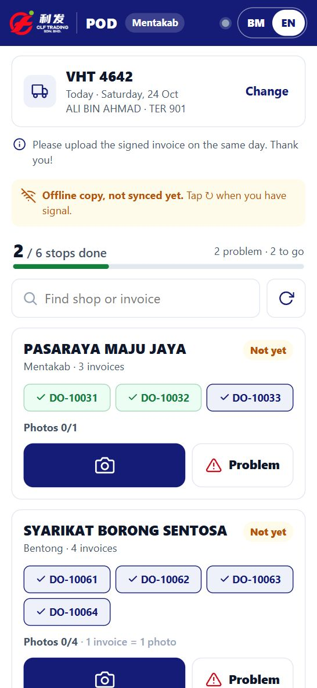
A shop is not on the list? Ask the office to add it. Do not send it any other way.
5At every shop: invoice photos
Signature and stamp first. Make sure the customer has signed and stamped the invoice before you take the photo.
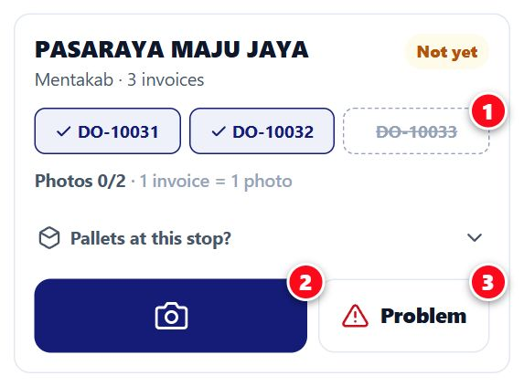
- Invoice numbers. All ticked ✓ = all delivered. An invoice was not delivered? Tap its number: the tick goes away and the number is crossed out. Tap again to tick it again.
- Camera button (big, blue): opens the camera.
- Problem: you cannot deliver (see part 9).
Photos 0/2 means: 0 photos taken, 2 photos needed. 1 invoice = 1 photo.
Untick an invoice that is not delivered just before you take the photos, and check the Photos 0/2 number. When the list refreshes (for example after you save another shop), the tick can come back.
The form's camera
- Tap the camera button. The form's camera opens with an A4 frame.
- A faint sample invoice shows in the frame for a moment, then disappears. It is only a sample, not your invoice.
- Lay the real invoice flat (on your lap or a board). The whole page inside the frame. One invoice only.
- Hold the phone steady. The frame turns green and says Hold… The camera takes the photo by itself, then the Check the scan screen opens.
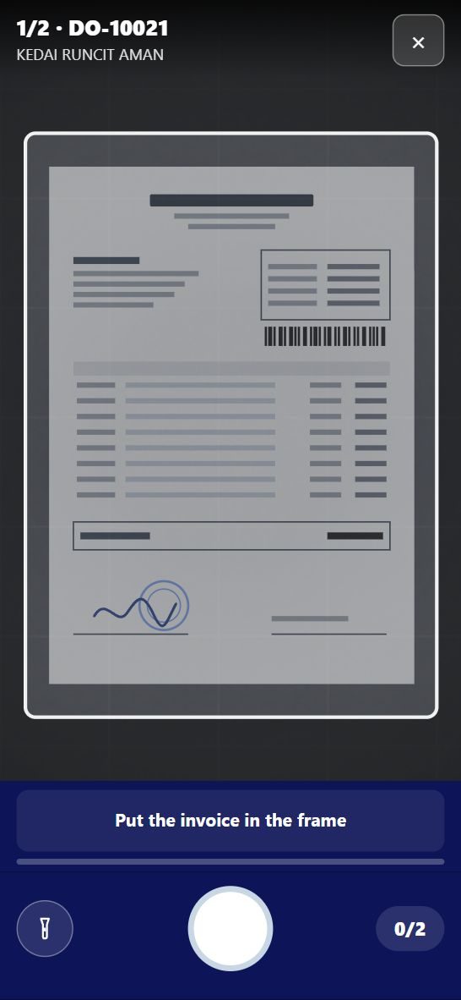
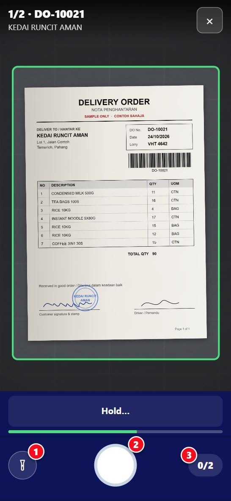
- Torch. Tap it when it is dark. (Only on phones that have a torch.)
- Round button. Tap it to take the photo yourself if the camera is slow. It pulses when no photo was taken for a while.
- Photo count: taken / needed.
At the top of the screen: the photo number, the invoice number and the shop name. The × button closes the camera. Photos already taken are kept.
The camera also gives instructions, for example: Too dark, more light please, Too bright or glare, Fit the whole invoice in the frame, Move closer and hold steady. Follow them.
Check the scan
After the photo is taken, the form shows the result: clean, like a page that went through a scanner.
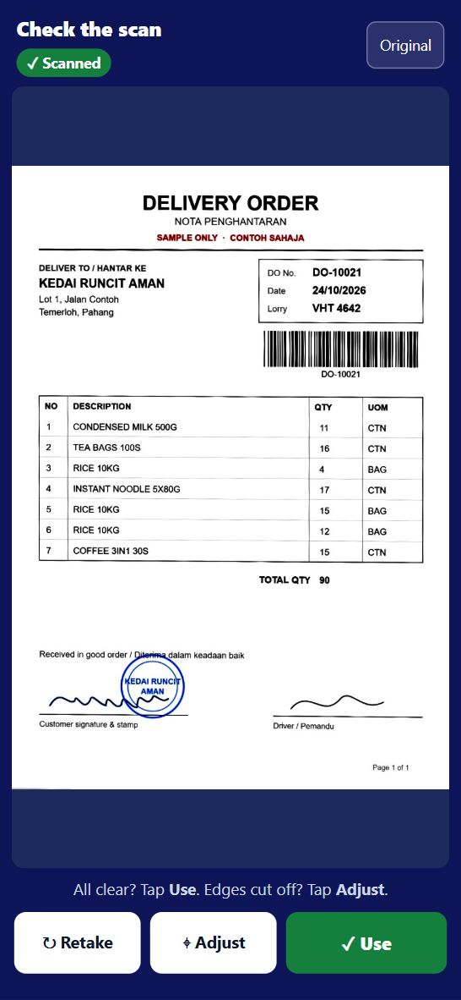
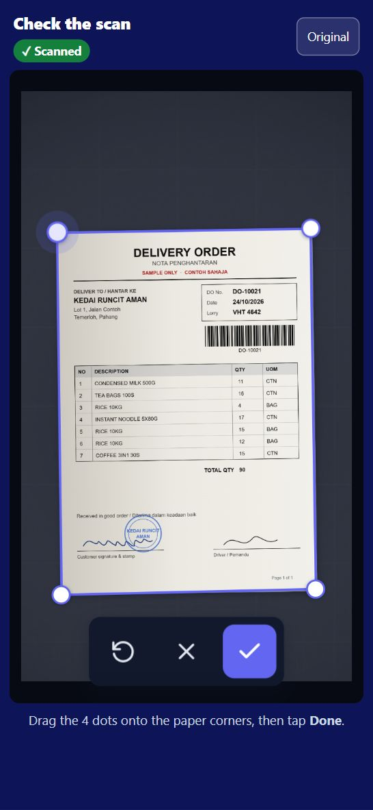
- ✓ Use: the scan is clear, keep this photo.
- ↻ Retake: take the same invoice again.
- Adjust: an edge is cut off? Drag the 4 dots onto the paper corners, then tap ✓ (Done).
- Original: see the photo as it was before the scan.
The label at the top: ✓ Scanned = good. ✓ Flattened = a curled page was flattened by itself, also good. ⚠ Check the edges or ⚠ Edges not found = look carefully, tap Adjust or Retake.
Next invoice
After ✓ Use, put the next invoice down. The text Put the NEXT invoice in the frame means the camera still sees the invoice you just took. Change the paper.
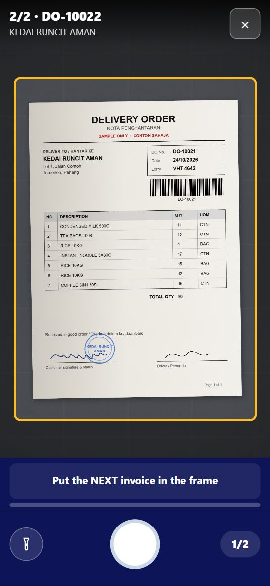
When all photos are taken, the camera closes by itself: All photos taken ✓ Tap Save.
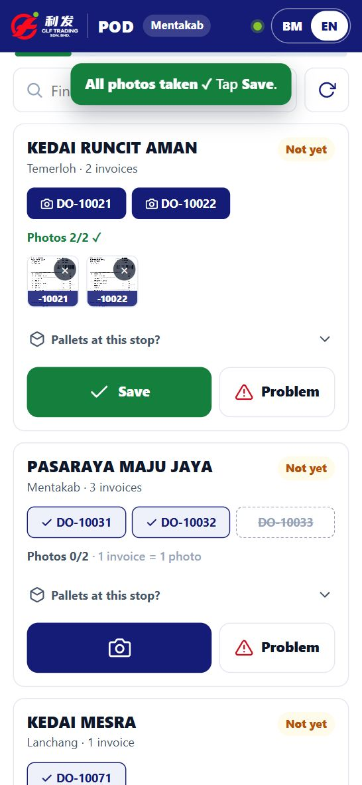
- Wrong photo? Tap the × on the small picture to remove it, then take it again.
- Tap a small picture to see it big.
Photo not clear
If the picture is blurry, too dark or cut off, the camera says Not clear: … and asks you to retake. After 3 tries, the Upload anyway button appears. Use it only when the invoice really is hard to photograph (for example shiny paper). That photo is marked ! for the office.
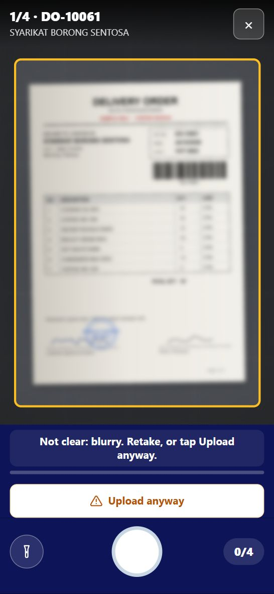
6Invoice barcode NEW
Every CLF invoice has a barcode. The camera reads it, so the form knows which invoice each photo belongs to.
- The order of the photos does not matter any more. Take them in any order.
- Keep the barcode clear in the photo. Do not cover it with your finger. Do not fold the paper there.
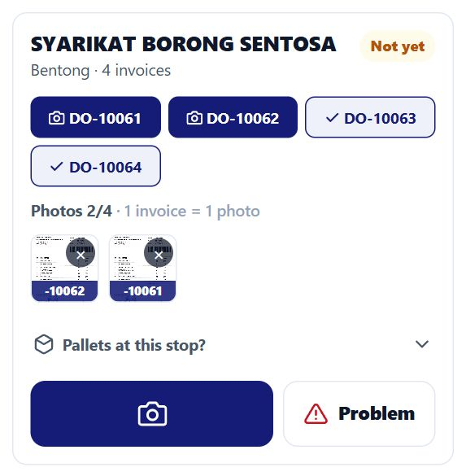
- After ✓ Use, the camera says Reading the barcode… for a moment.
- Invoice numbers that already have a photo carry a camera mark.
- Under every small picture: its invoice number (the last 6 characters).
Invoice … already has a photo
This invoice was already photographed. Choose:
- Replace old photo: this new photo takes the place of the old one (for example the old one was not clear).
- Discard new photo: keep the old photo. Then put another invoice down.
Invoice … is not for this shop
This is another shop's invoice! Check your papers.
- Retake: the normal choice. Take the photo of this shop's invoice.
- Keep anyway: only if you are sure this invoice really belongs to this shop. The photo is marked red for the office.
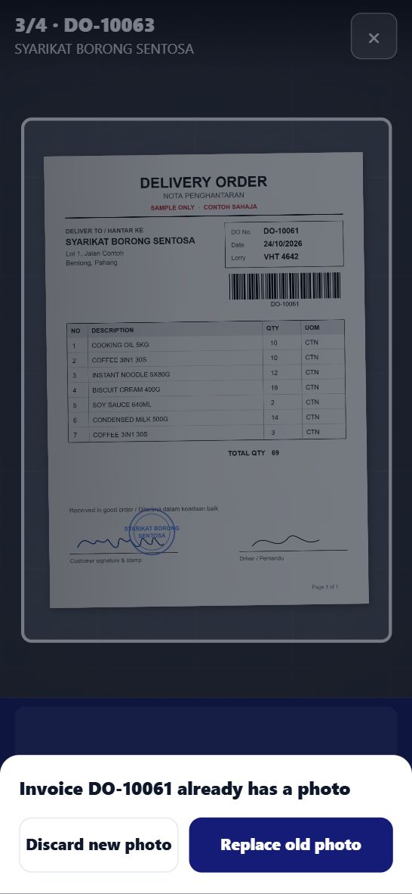
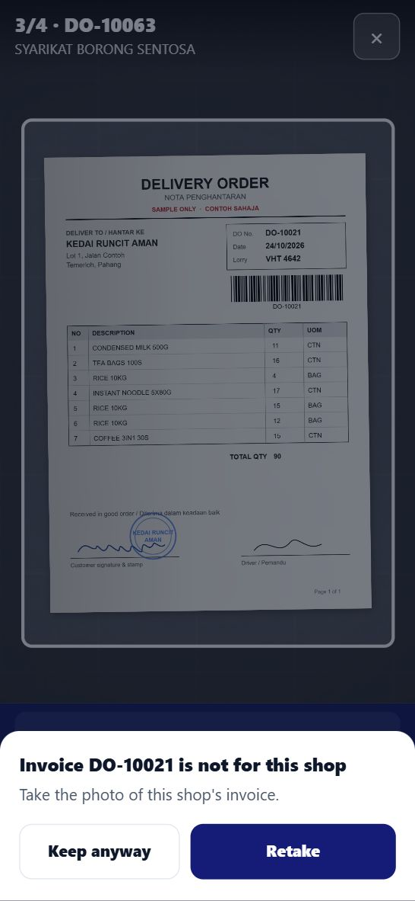
A ? on a photo
The barcode could not be read (for example dirty, folded or under a finger). The photo is still kept, with a ? under it. Tap the ?, then choose the right invoice number under Which invoice is this photo?. Invoices marked ✓ barcode already have a photo read from its barcode.
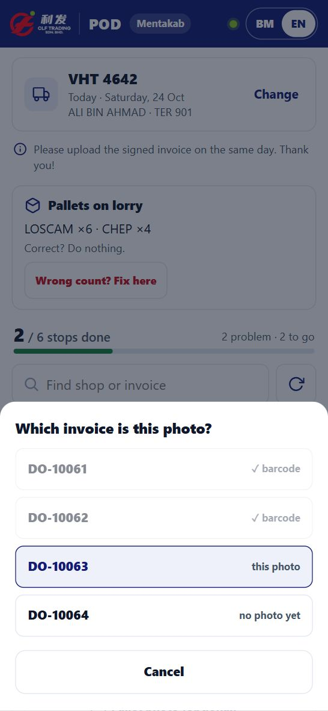
The AI checks photos without a barcode
Barcode not read? The form sends the photo to the AI, which reads the invoice number, shop name and total. You can go on with the next photo.
- While the AI reads: … under the thumbnail (a few seconds).
- Right: the invoice number appears under the thumbnail. If the photo is another invoice of this shop, the form moves it to the right invoice by itself.
- Red !: this photo is another shop's invoice, an invoice that already has a photo, or an invoice that is not ticked. A red message appears at the top, also while the camera is open.
- Amber !: the photo is not clear, the invoice number cannot be read.
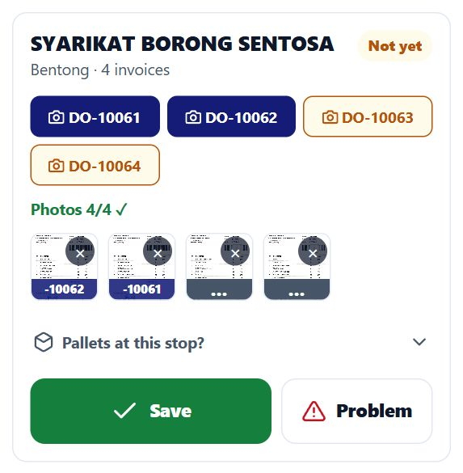
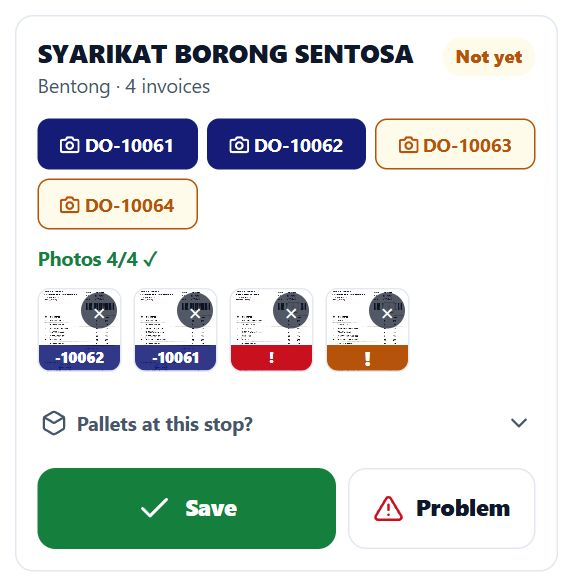
Tap the ! to see why, then Remove photo or keep the photo.
At Save, the form asks about every photo marked !:
- Retake: the usual choice. The photo is removed. Take the right invoice.
- Keep anyway (red) or Save as it is (amber): only if you are sure the photo is right. The photo is marked for the office.
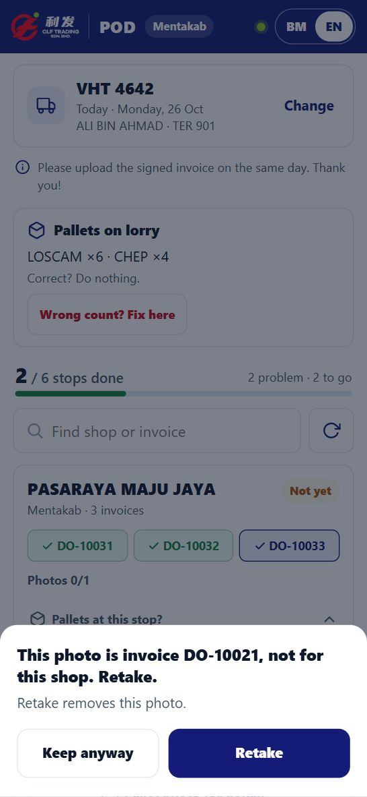
If the AI has not finished when you tap Save, the form shows Checking the photos… for a moment. No signal? The photo keeps its ?, and the office checks it later.
A photo marked red = a photo for an invoice that is not ticked ✓. Tick that invoice again, or remove the photo (×). Save only works when every invoice has its own photo: Each invoice needs its own photo. Check the photos marked in red.
7Pallets at a shop
Did you drop or collect pallets at this shop? Fill it in before you tap Save. The pallets are sent together with the Save.
- Tap Pallets at this stop?
- Choose the pallet type.
- Drop = how many pallets you leave at the shop. Collect = how many empty pallets you take back.
- Pallet photo (optional): recommended, as proof.
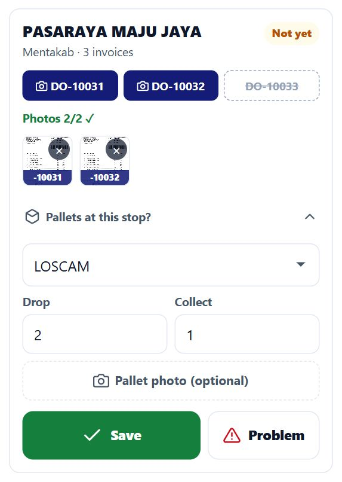
After Save: a green message Pallet recorded. If a red message says Pallet NOT recorded, your POD is still saved. Tell the office the pallet count.
8Save
The green Save button only appears when the number of photos equals the number of invoices (for example Photos 2/2 ✓).
- Tap Save.
- A blue screen says Saving… (then Confirming…). Do not close the form.
- Done: the shop shows Delivered and moves to the bottom of the list.
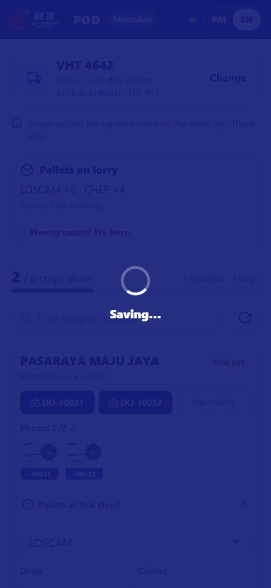
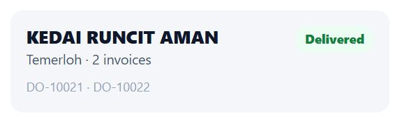
Not confirmed
Sometimes the signal drops after the photos went out, and the phone gets no confirmation. That shop will not show Delivered. It shows Not confirmed with the note Save not confirmed yet. Your photos are kept. Tap Check.
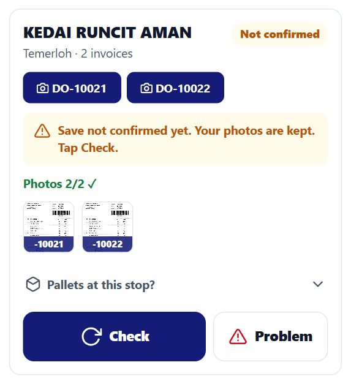
- Your photos are still kept in the form. Do not take the photos again.
- When you have signal, tap Check.
- If it is confirmed, the shop turns Delivered.
- If it says Still not confirmed, wait for signal and tap Save again. The same photos are sent again. No new photos are needed.
Only a shop marked Delivered is finished. Do not close or reload the form while a shop is Not confirmed or has photos that are not saved yet. Those photos exist only in the form.
Save failed
If you see the message NOT saved! or Save failed, your photos are still there. Find signal and tap Save again.
Only some invoices delivered
Example: 3 invoices, only 2 delivered. Tap the number of the invoice that was not delivered (crossed out), take 2 photos, tap Save. The two invoices turn green. The invoice left over still has to be finished: deliver it later, or tap Problem and choose a reason.
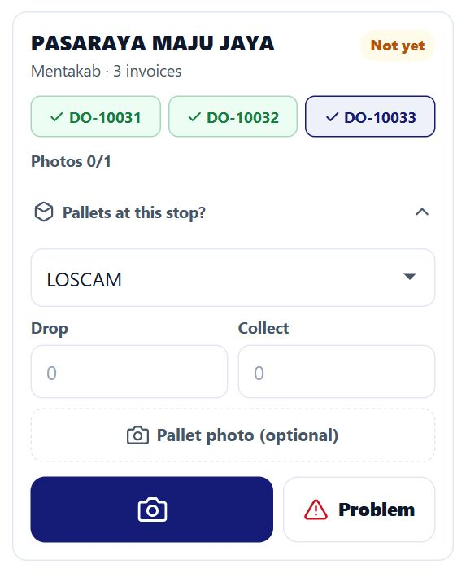
9Problem: cannot deliver
- Tap Problem on the shop card.
- Tap Proof photo. Take a photo of the shop or the problem (for example the closed shop). This camera has no frame: tap the round button.
- Choose the reason (see the table).
- The form asks first, for example: Mark 1 invoice as “Shop closed”? Tap Yes, mark or Cancel.
- The shop is marked red with the reason.
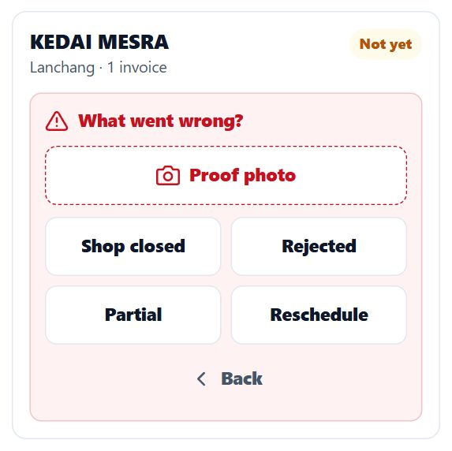
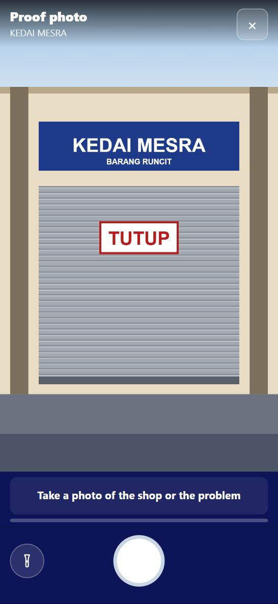
| Reason | When to use it |
|---|---|
| Shop closed | The shop is closed, or nobody is there to receive. |
| Rejected | The customer does not accept the goods. |
| Partial | The customer accepted only part of the goods. Take a proof photo of that invoice and tell the office what was short. |
| Reschedule | The goods will be delivered another day. |
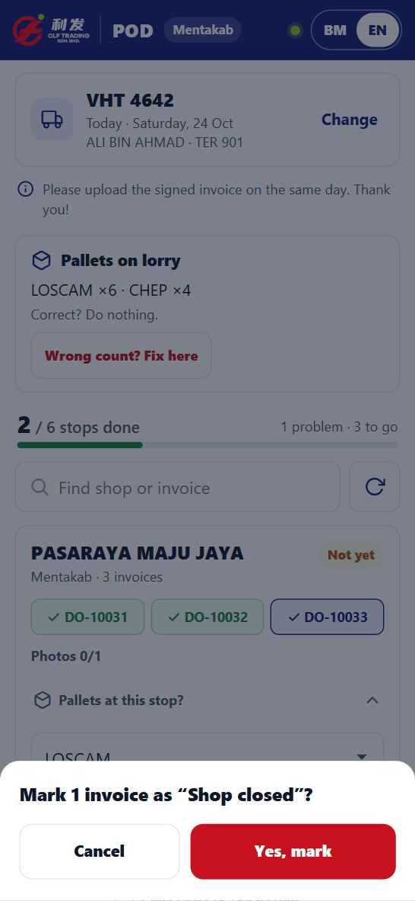
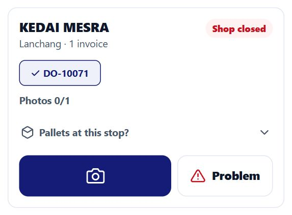
- Back = leave without marking anything.
- Always take a Proof photo. Without one, the form shows the red note No proof photo added.
- Problem marks all invoices of that shop that are not delivered yet. If some invoices were delivered, Save those first (part 8), then tap Problem for the rest.
- If a message says it was not saved or not confirmed, the proof photo is still there. Find signal and choose the reason again.
10Common situations
The camera does not open
When the phone asks, tap Allow for the camera. If the camera is blocked, the form shows the message The camera cannot open here… Tap the camera button again: the phone's own camera opens and you can keep working.
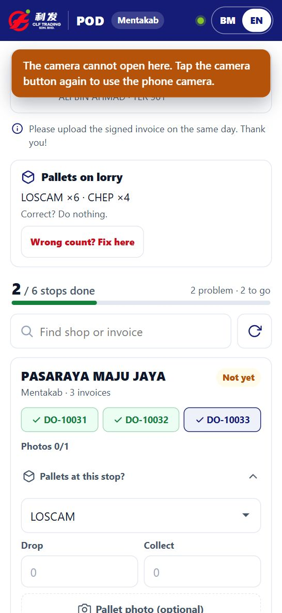
Want the form's camera back? Allow the camera in the site settings (the icon next to the web address, then Camera, Allow). Then open the form again, after all shops are saved.
The camera says Camera not responding? Tap × and tap the camera button again.
The list does not appear
Cannot load the delivery list right now means a connection problem, not a missing order. Find signal, then tap Tap to retry.
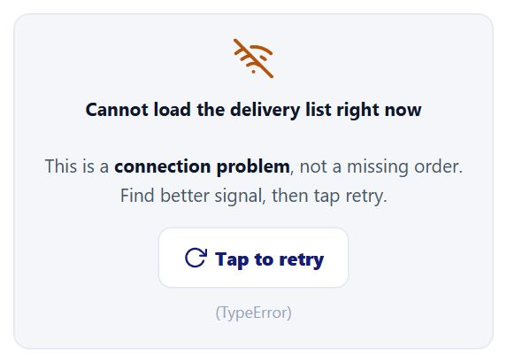
No list for this lorry
No delivery list for this lorry: check the lorry number and the date. If both are right, ask the office to check the order.
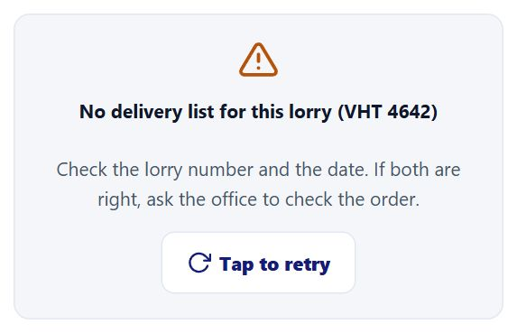
Wrong date
An orange date = not today. Tap Change, fix the date, then tap Done.
Photo not clear
Find enough light (or tap the torch), avoid glare, lay the paper flat and hold the phone steady. After 3 tries, Upload anyway can be used (see part 5).
Pallet NOT recorded
Your POD is already saved. Tell the office how many pallets you dropped or collected.
Marked a Problem by mistake, or a shop is not on the list
Call the office.
11Important rules
Please upload the signed invoice on the same day. Thank you! Send it at every shop, while you are there. Do not wait for the end of the day.
- Signature and stamp first, then the photo.
- 1 invoice = 1 photo. The whole page inside the frame, the barcode clear.
- Fill in pallets before you tap Save.
- Wait until the shop shows Delivered. If it shows Not confirmed, tap Check when you have signal. Do not take the photos again.
- Do not close the form while the Saving… screen shows. Finish one shop before you open another app.
- Cannot deliver? Tap Problem, take a proof photo and choose the reason.
- A shop is not on the list? Ask the office to add it.